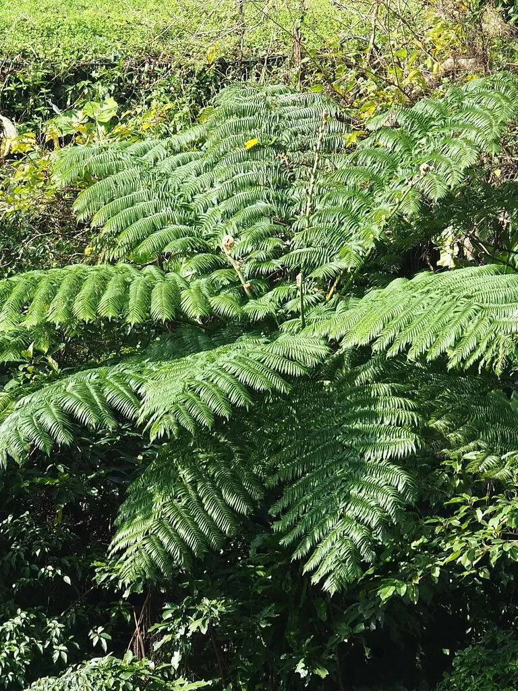

蕨类与裸子植物 · 植物界
笔筒树 Sphaeropteris lepifera

笔筒树是高大的树状蕨类，树干笔直、叶痕如笔筒纹路，叶柄可作蛇木材料，属国家二级重点保护野生植物。
- 分类
- 门蕨类植物门纲木贼纲目桫椤目科桫椤科属笔筒树属
- 栖息环境
- 热带、亚热带山地林缘与溪谷，喜温暖湿润
- 地理分布
- 中国台湾及菲律宾、日本南部等地
- 保护级别
- IUCN 暂无评估；中国国家二级重点保护野生植物
物种志
笔筒树是桫椤科树状蕨类，主干高可达 5–10 m，表面有明显的椭圆形叶痕，排列成鳞片状花纹，形似笔筒的纹路，因此得名。主干顶端丛生大型二回羽状复叶，叶长 2–4 m，幼叶拳卷，密被鳞片；叶柄基部有气囊，老叶柄脱落后留下叶痕。孢子囊群圆形，着生于叶背。
笔筒树原产台湾、菲律宾与日本南部，喜温暖湿润的热带、亚热带环境，多生于山地林缘与溪谷。它以孢子繁殖，生长缓慢。笔筒树的叶柄坚韧、耐腐，老叶柄可作兰花栽培的“蛇木”材料，曾是重要的园艺用材，因此遭到大量砍伐；加上生境破坏，野生资源稀少。笔筒树是桫椤科中体型较大的种类，被列为中国国家二级重点保护野生植物，现已有人工繁育。
形态与习性
- 主干高 5–10 m，表面有叶痕花纹
- 叶大型二回羽状复叶，长 2–4 m
- 叶柄坚韧耐腐，可作兰花“蛇木”材料
- 孢子囊群圆形，着生于叶背
- 保护国家二级重点保护野生植物
趣味知识
- 笔筒树的树干上布满椭圆形叶痕，花纹像笔筒，名字由此而来。
- 它的老叶柄坚韧耐腐，可作兰花栽培用的“蛇木”材料。
- 笔筒树因长期砍伐和生境破坏，被列为国家二级保护植物。